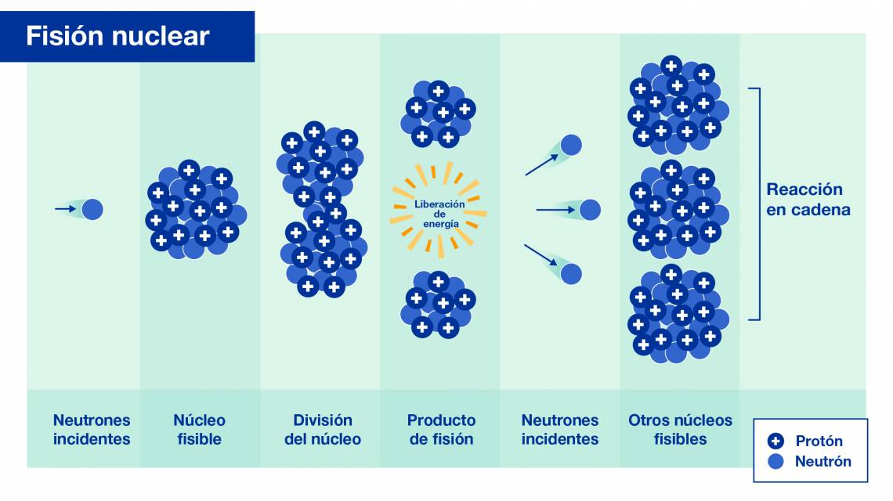

La energía núclear: es un tipo de generación de electricidad el cual no es renovable, es más potente que la energía generada a partir de combustibles fósiles y menos contaminante que estas, esta energías se dividen en dos tipos de maneras de producirlas, una es la
fusión núclear la cual se caracteriza por unir dos núcleos de átomos ligéros y convertirlos por subsecuente en un átomo pesado, dado que este proceso genera energía se puede utilizar para su explotación como combustible de energía electrica, debido a que actualmente no es posible una reacción sostenida con este tipo de generación eléctica, es recomendable la utilización provisoria de la energía electrica genera a partir de la
fisión nuclear, la fisión nuclear es el proceso opuesto a la fusión núclear por que esta consiste en la separación de núcleos átomicos debido a un neutrón incidente el cual proviene de un lugar externo al propio átomo, y dada su separación conlleva la dispersación de desde 2 a 3 nueutrones los cuales separan otros átomos y se repite de manera ciclica.

Fisión núclear
Fisión nuclear datos:
Ya sabemos lo que es la energía núclear ha llegado la hora de dividir en fisión y fusión núclear y explicar a detalle que es exactamente cada una de ellas, para esto debemos comenzar con la fisión nuclear, la fisón nuclear es el metodo más utilizado del mundo a diferencia de la fusión núclear que es cientificamente con nuestra tecnología actual inviable, otro de los puntos a favor de la energía núclear mediante fisión es tal vez que es un activo menos contaminante que la energía generada a partir de combustibles fósiles (como el petroleo, gas o carbón) sin embargo para producirla es necesario muchos recursos, personal muy capacitado, sistemas de seguridad avanzados, barras de control, y demás cosas de las que solo las grandes potencias como Estados Unidos China, y los páises de la Unión Europea poseen, una central núclea posee la cualidad de ser mucho más segura que por ejemplo en los años 70's o 80's, otro punto a destacar es que la energía núclear solamente genera vapor de agua y no CO2 como parece generar ya que este humo que vemos en las imágenes correspondientes a una central núclear es solo este mismo vapor de agua que se emite dado que en el proceso de generar energía nuclear es necesario calentar grandes cantidades de agua para su correcto funcionamiento, es por esto que la energía nuclear mediante fusión es la opción más aceptable actualmente exceptuando a los países pobres o tercermundistas como Argentina ya que actualmente no tenemos los recursos ni la capacidad economica para sostener un proyecto tan grande como lo es la creación de una central nuclear.
Todo estos datos refieren a la energía núclear generada mediante fisión núclear, además este tipo de energía es tan barata como las energías renovables a pesar de no ser contaminante esta es limitada osea no renovable debido a que esta energía es más potente que la energía generada a partir de combustibles fósiles esta tiene más chances de sustituirlas que un tipo de energía que depende del sol (si hay nubes o no), de la lluvia o del viento.
Datos sobre la fusión nuclear: La fusión nuclear sería generada a partir de el intento del hombre por simular la presión y temperatura que se haya dentro del estrellas como soles, pero sin embargo esto es inviable dado que se requiere alimentar con más electricidad a los laseres que la que se produce, es menester mencionar la investigacón que llevo acabo LNLL Laboratorio Nacional Lawrence Livermore en Estados Unidos la prensa se llenó de titulares como: "La energía del futuro", "REVOLUCIÓN ENERGETICA, etc", pero en realidad en esta investigación en particular se alimenta al reactor con 2,1 Megajulios y se obtiene una energía de 2,5 Megajulios, pero en realidad es solo la primera vez que se obtiene más energía de la que se gasta (dentro del reactor) dado que para obtener estos resultados se alimentó un láser con otros 300 Megajulios, esto es un paso importante sin embargo esta lejos de generar más energía de la que necesita consumir, lo que hace que dentro de mucho tiempo más esta opción siga siendo inviable.
Existen dos maneras de fusionar para generar energía nuclear las cuales son: Por confinaminto unercial y por confinamiento magnetico.
Por confinamiento inercial: el cual se basa en inyectar grandes cantidades de energía mediante láser a una esfera de deuterio y tritio los cuales son derivados del hidrógeno.
Por confinamiento magnetico: el cual se basa en atrapar cantidad de plasma dentro de una esfera con campos electro-magneticos.